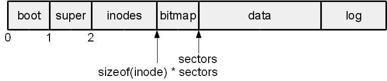
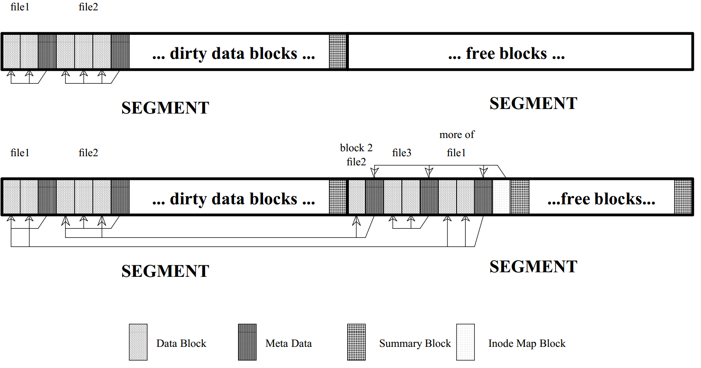
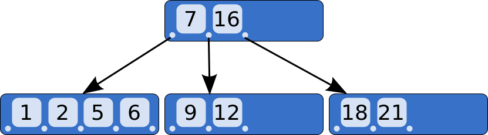

File Systems (2)
CS422/522 Lecture 11
15 October 2014
Last updated: 15 October 2014
Recap
- Basic file system layout
- File system reading -- inode and block caches
Inode Cache
- We store each inode in a cache
- File descriptor has pointer to inode
- Inode has reference counter
- Freed back to inode cache upon end of use
- Inodes are first loaded into memory via the buffer cache
A More Practical FS Approach
- File descriptor -- user / kernel interfacee
- Pathname
- Directory
- Inode
- Logging -- reliability
- Buffer cache -- performance / sychronization
- Disk

We extend superblock to contain number of log entries
File System Logs
Transactions
- Series of writes
- Atomic -- all or none
- Prevents stale file system state, despite crashes
- Supports batching
File System Logs in Action
- Update a buffer cache
- Set in-memory log to write to disk
- Release for other readers / writers
- ...
- Write log to on-disk log
- Write log header to on-disk log header
- Write content to disk data
- Remove log header
Fault Tolerance
- Empty log header: all committed or interrupted
- Log header: interrupted before copying to data
Recovering from Log
- Found non-empty log header
- Read header
- Store log contents into data
- What happens to partially committed data
Xv6 Write Example
echo "Hello, World" > /home/davidiw/test
- open("/home/davidiw/hw5.sol", O_CREAT | O_WRONLY)
- Scan / inode for home ...
- Find a free inode, create file shell
- Update directory with new file entry
- Return fd return to echo, echo perofms write(fd, ...)
- Start a new transaction
- Write (update) contents into 1 or more buffers
- End transaction
- Transaction queued
- Write to disk log
- Write to disk
- Erase log
Creating a file
6101 sys_open(void)
6111 begin_op();
6113 if(omode & O_CREATE){
6114 ip = create(path, T_FILE, 0, 0);
...
6132 if((f = filealloc()) == 0 || (fd = fdalloc(f)) < 0){ ... }
6139 iunlock(ip);
6140 end_op();
6141
6142 f−>type = FD_INODE;
6143 f−>ip = ip;
6144 f−>off = 0;
6145 f−>readable = !(omode & O_WRONLY);
6146 f−>writable = (omode & O_WRONLY) || (omode & O_RDWR);
6147 return fd;
Inode and directory
6057 create(char *path, short type, short major, short minor)
6063 if((dp = nameiparent(path, name)) == 0)
6064 return 0;
6065 ilock(dp);
6076 if((ip = ialloc(dp−>dev, type)) == 0)
6077 panic("create: ialloc");
6078
6079 ilock(ip);
6080 ip−>major = major;
6081 ip−>minor = minor;
6082 ip−>nlink = 1;
6083 iupdate(ip);
6092
6093 if(dirlink(dp, name, ip−>inum) < 0)
6094 panic("create: dirlink");
6096 iunlockput(dp);
6098 return ip;
Allocating an inode
4953 ialloc(uint dev, short type)
4960 readsb(dev, &sb);
4962 for(inum = 1; inum < sb.ninodes; inum++){
4963 bp = bread(dev, IBLOCK(inum));
4964 dip = (struct dinode*)bp−>data + inum%IPB;
4965 if(dip−>type == 0){ // a free inode
4966 memset(dip, 0, sizeof(*dip));
4967 dip−>type = type;
4968 log_write(bp); // mark it allocated on the disk
4969 brelse(bp);
4970 return iget(dev, inum);
4971 }
4972 brelse(bp);
4973 }
Updating a directory
5402 dirlink(struct inode *dp, char *name, uint inum)
5409 if((ip = dirlookup(dp, name, 0)) != 0){ ... }
5415 for(off = 0; off < dp−>size; off += sizeof(de)){
5416 if(readi(dp, (char*)&de, off, sizeof(de)) != sizeof(de))
5417 panic("dirlink read");
5418 if(de.inum == 0)
5419 break;
5420 }
5422 strncpy(de.name, name, DIRSIZ);
5423 de.inum = inum;
5424 if(writei(dp, (char*)&de, off, sizeof(de)) != sizeof(de))
5425 panic("dirlink");
5427 return 0;
Writing data to an inode
5302 writei(struct inode *ip, char *src, uint off, uint n)
5318 for(tot=0; tot<n; tot+=m, off+=m, src+=m){
5319 bp = bread(ip−>dev, bmap(ip, off/BSIZE));
5320 m = min(n − tot, BSIZE − off%BSIZE);
5321 memmove(bp−>data + off%BSIZE, src, m);
5322 log_write(bp);
5323 brelse(bp);
5324 }
5326 if(n > 0 && off > ip−>size){
5327 ip−>size = off;
5328 iupdate(ip);
5329 }
5330 return n;
Updating an inode
4979 iupdate(struct inode *ip)
4984 bp = bread(ip−>dev, IBLOCK(ip−>inum));
4985 dip = (struct dinode*)bp−>data + ip−>inum%IPB;
4986 dip−>type = ip−>type;
4987 dip−>major = ip−>major;
4988 dip−>minor = ip−>minor;
4989 dip−>nlink = ip−>nlink;
4990 dip−>size = ip−>size;
4991 memmove(dip−>addrs, ip−>addrs, sizeof(ip−>addrs));
4992 log_write(bp);
4993 brelse(bp);
This whole notion of logging
- We have not seen a bwrite
- We have seen begin_op, log_write, end_op
- These act as a logging layer to bwrite
Starting a transaction
4628 begin_op(void)
4630 acquire(&log.lock);
4631 while(1){
4632 if(log.committing){
4633 sleep(&log, &log.lock);
4634 } else if(log.lh.n + (log.outstanding+1)*MAXOPBLOCKS > LOGSIZE){
4635 // this op might exhaust log space; wait for commit.
4636 sleep(&log, &log.lock);
4637 } else {
4638 log.outstanding += 1;
4639 release(&log.lock);
4640 break;
4641 }
4642 }
Writing to the log
4722 log_write(struct buf *b)
4726 if (log.lh.n >= LOGSIZE || log.lh.n >= log.size − 1)
4727 panic("too big a transaction");
4728 if (log.outstanding < 1)
4729 panic("log_write outside of trans");
4730
4731 for (i = 0; i < log.lh.n; i++) {
4732 if (log.lh.sector[i] == b−>sector) // log absorbtion
4733 break;
4734 }
4735 log.lh.sector[i] = b−>sector;
4736 if (i == log.lh.n)
4737 log.lh.n++;
4738 b−>flags |= B_DIRTY; // prevent eviction
Ending the Transaction
4653 end_op(void)
4655 int do_commit = 0;
4657 acquire(&log.lock);
4661 if(--log.outstanding == 0){
4662 do_commit = 1;
4663 log.committing = 1;
4664 } else {
4666 wakeup(&log);
4667 }
4668 release(&log.lock);
4669
4670 if(do_commit){
4673 commit();
4674 acquire(&log.lock);
4675 log.committing = 0;
4676 wakeup(&log);
4677 release(&log.lock);
4678 }
Making a Commitment
4701 commit()
4703 if (log.lh.n > 0) {
4704 write_log(); // Write modified blocks from cache to log
4705 write_head(); // Write header to disk −− the real commit
4706 install_trans(); // Now install writes to home locations
4707 log.lh.n = 0;
4708 write_head(); // Erase the transaction from the log
4709 }
Writing the Log
4683 write_log(void)
4687 for (tail = 0; tail < log.lh.n; tail++) {
4688 struct buf *to = bread(log.dev,
log.start+tail+1); // log block
4689 struct buf *from = bread(log.dev,
log.lh.sector[tail]); // cache block
4690 memmove(to−>data, from−>data, BSIZE);
4691 bwrite(to); // write the log
4692 brelse(from);
4693 brelse(to);
4694 }
Writing to the Disk
4414 bwrite(struct buf *b)
4416 if((b−>flags & B_BUSY) == 0)
4417 panic("bwrite");
4418 b−>flags |= B_DIRTY;
4419 iderw(b);
Writing the Log Head
4604 write_head(void)
4606 struct buf *buf = bread(log.dev, log.start);
4607 struct logheader *hb = (struct logheader *) (buf−>data);
4608 int i;
4609 hb−>n = log.lh.n;
4610 for (i = 0; i < log.lh.n; i++) {
4611 hb−>sector[i] = log.lh.sector[i];
4612 }
4613 bwrite(buf);
4614 brelse(buf);
Completing the Transaction
4572 install_trans(void)
4574 int tail;
4575
4576 for (tail = 0; tail < log.lh.n; tail++) {
4577 struct buf *lbuf = bread(log.dev,
log.start+tail+1); // read log block
4578 struct buf *dbuf = bread(log.dev,
log.lh.sector[tail]); // read dst
4579 memmove(dbuf−>data, lbuf−>data, BSIZE); // copy block to dst
4580 bwrite(dbuf); // write dst to disk
4581 brelse(lbuf);
4582 brelse(dbuf);
4583 }
Other Types of Files Systems
- Pipes
- Devices (devfs)
- System state: procfs, sysfs
- Log / transaction
- Database
- Tape
- Flash
- Network file systems
- FUSE
Devices
- Character -- direct / unbuffered
- Block -- indirect / buffered
- /dev/null -- writes are discarded, nothing to read
- /dev/zero -- writes are discarded, reads return NUL
- /dev/full -- unable to write, returns NUL
- /dev/random | /dev/urandom -- pseudo-random streams
- /dev/sda | /dev/hda -- hard disks
procfs
- Found under /proc
- Process information /proc/$PID
- OS information
- Uptime
- Network settings
- Set -- echo $VALUE > file
- Rad -- cat file
sysfs
- Similar to procfs / devfs
- Emphasis on unified driver / device
- Change brightness on a laptop display:
cat /sys/class/backlight/intel_backlight/max_brightness >
/sys/class/backlight/intel_backlight/brightness
Transactional File System
- Log in xv6 offers: atomic writes
- Never overwrite contents, requires garbage collection
- All writes should be written sequentially, like xv6 log
- Many writes can be issued together -- transaction

Database
- What happens if we insert or delete content from the middle of a file?
entire file must be updated from that point on
- Databases can store large objects using B-tree:

- b-tree contains meta-data including offset and size
- data is variable size
Tape
- Wny tapes?
- inherently hot-swappable
- cooler
- rugged
- fast sequential writes
- Two approaches:
- Meta-data at head, data afterward
- Meta-data interspersed with data
Flash
- Challenges / Features not addressed by existing FS:
- Blocks must be explicitly erased before written -- takes time
- Supports random access
- Wear leveling -- rewriting same block can wear out block
- Log structured file systems
- Hardware vs software support erasing blocks / wear leveling
Network File Systems
- Share folder / files across Network
- Benefits:
- Deduplication of data
- Shared home directories
- Convenient access to common files
- Challenges:
- Access permissions
- Where to store state
- Coherency
FUSE
- File-System in User-Space
- Operations occur in a virtual file system
- Redirected toward user-space handler
- Able to write fully functional FS: NTFS, SSHFS
Lab
Lab 4 due tomorrow
Lab 5 assigned, due 30 October
Next Time
I/O, Drivers, and Exam prep
Monday 1:00PM